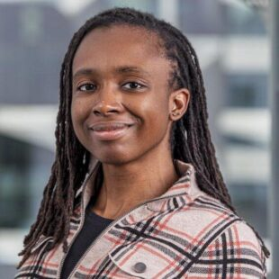
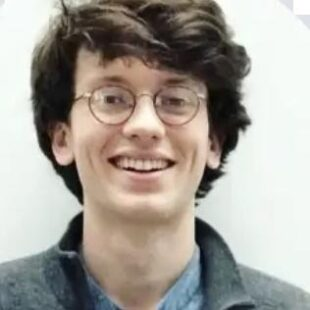
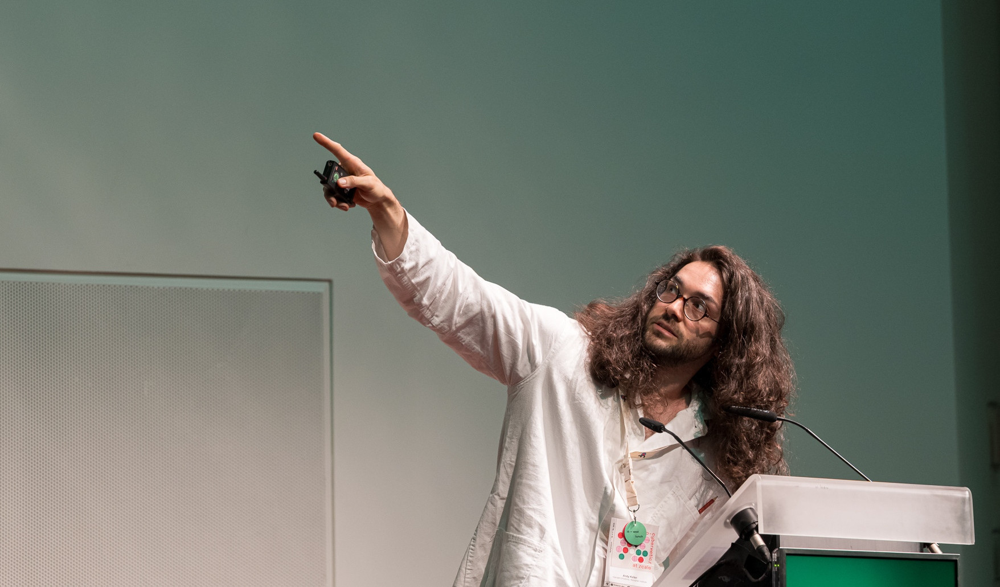
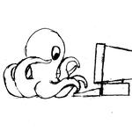
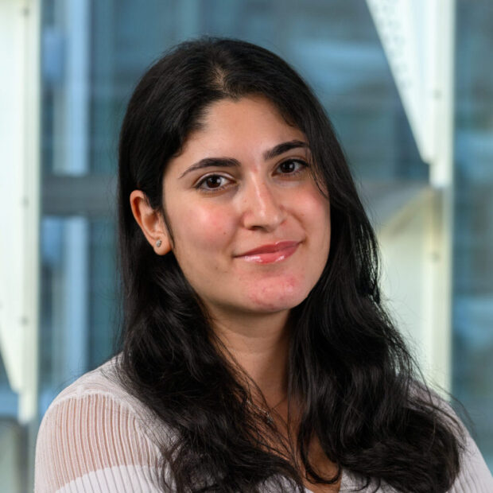
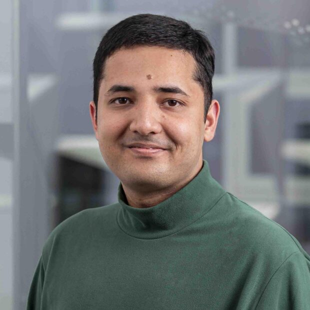
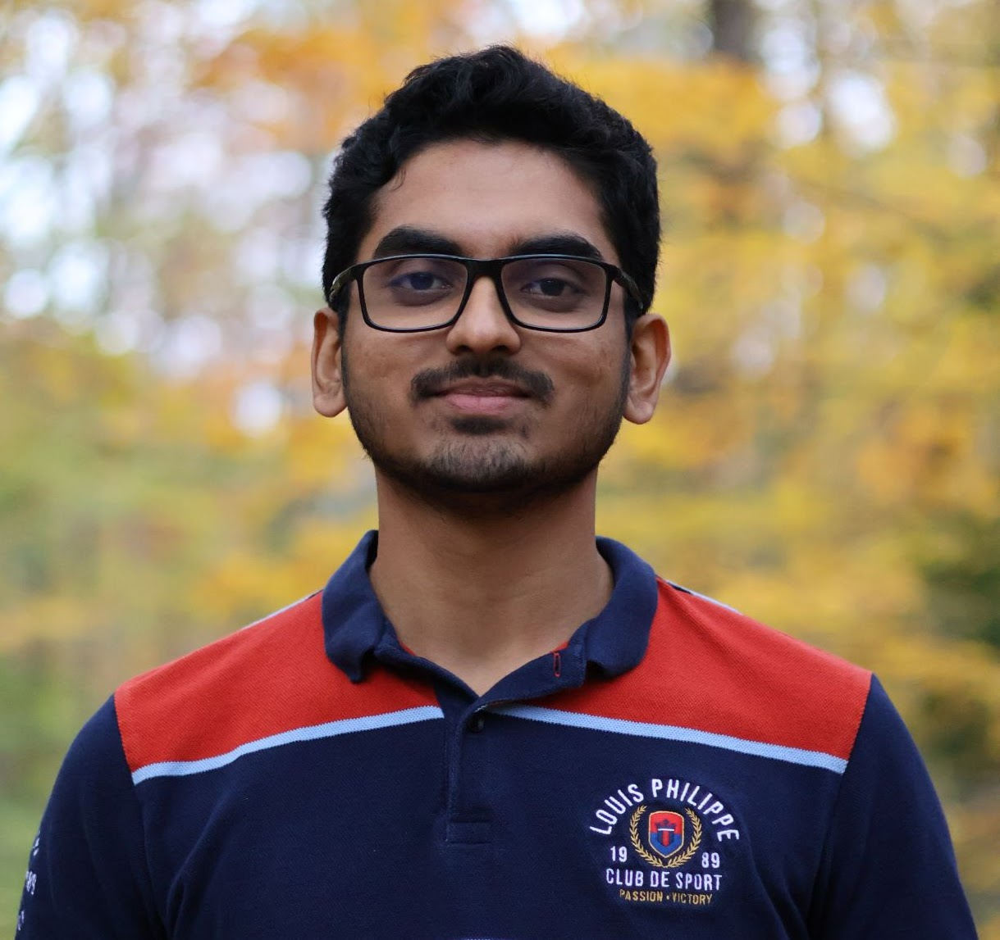
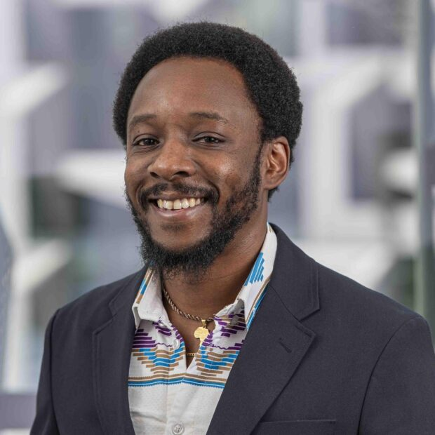

Perspectives on Interpretability in Sciences and ML
A reading club systematically exploring the similarities and differences between neuroscience and machine learning interpretability.
A panel discussion bringing together neuroscientists and AI researchers to explore the fundamental units of neural computation — and what interpretability means across these levels of description.
Agenda: Opening — what are the units of computation? · Component deep-dives · Bridging across components and fields · Looking ahead into the future





A presentation on how harmful behavior in LLMs relies on a compact set of internal weights, helping explain why safety safeguards are brittle and why narrow fine-tuning can trigger broad misalignment.
PRISM sessions are open to all — graduate students, postdocs, undergraduates, and faculty across departments.
Perspectives on Interpretability in Sciences and ML
To systematically explore the similarities and differences between neuroscience and machine learning interpretability.
Interpretability is a rapidly growing area in both AI research and neuroscience, aiming to understand how neural networks — artificial and biological — represent and process information. PRISM brings together researchers and students working on diverse approaches to this shared problem, from geometric structure in neural network latent spaces to tools for interpreting large models and understanding biological neural circuits.
Spring 2026 sessions take the form of panel discussions and paper readings, organized around three interrelated themes:
Our inaugural semester featured talks and discussions across four core themes:
Speakers included postdocs, graduate students, and undergraduates from SEAS, MCB, and affiliated institutes including IAIFI and the Kempner Institute.
Sessions run weekly on Tuesdays from 3–4 PM, with 30 minutes of presentation followed by 30 minutes of open discussion. Each session pairs an ML interpretability researcher with a neuroscience or science researcher. Sessions are held in SEC 6.242 at the Kempner Institute, with a Zoom option available. Light refreshments are provided.
Members are welcome to suggest papers for future sessions.
PRISM is sponsored by the Kempner Institute for the Study of Natural and Artificial Intelligence at Harvard University. The Kempner Institute supports interdisciplinary research at the intersection of natural and artificial intelligence.
The people behind PRISM
PRISM is organized by researchers across departments at Harvard. We welcome others who wish to get involved in organizing future sessions.


